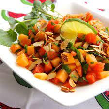

Watercress, Melon and Almond Salad

Description
Melons and watercress make great summer dessert salads. If you cannot find any watercress, try some fresh mint instead.
Ingredients
- 3 tablespoons fresh lime juice
- 1 teaspoon white sugar
- 1 teaspoon minced fresh ginger root
- ¼ cup vegetable oil
- 2 bunches watercress, trimmed and chopped
- 2½ cups cubed watermelon
- 2½ cups cubed cantaloupe
- ⅓ cup toasted and sliced almonds
Steps
- In a large bowl, whisk together lime juice, sugar, and ginger. Gradually add oil and season with salt and pepper to taste.
- Add watercress, watermelon, and cantaloupe to dressing and toss to coat. Transfer salad to plates, sprinkle with sliced almonds and serve immediately.